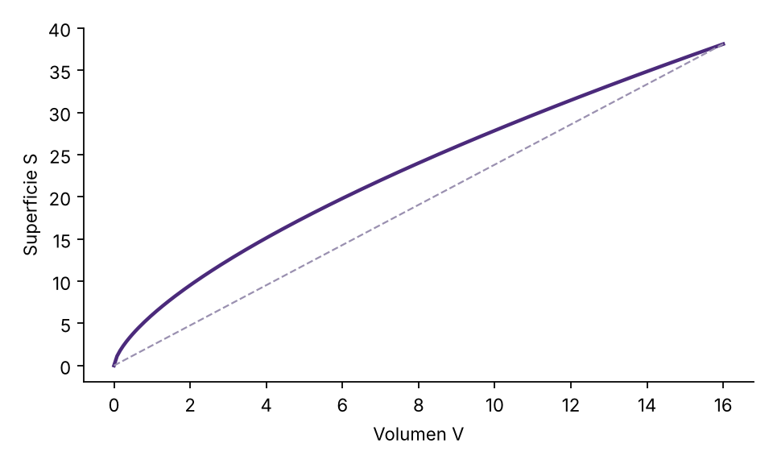

Resumen
Se argumenta que el cociente superficie-volumen impone una restricción real pero parcial al tamaño de los organismos que dependen de la difusión. La tesis es que funciona como una cota y no como una explicación completa: indica qué no puede hacerse sin estructuras adicionales, pero no por qué cada linaje resolvió el problema como lo hizo.
Palabras clave: tamaño corporal; escalamiento; difusión; multicelularidad
Introducción y tesis
Cuando un cuerpo crece conservando su forma, su volumen aumenta más rápido que su superficie. Para un cubo de arista $L$, la superficie es $S = 6L^2$ y el volumen es $V = L^3$; al eliminar $L$ se obtiene
La consecuencia habitual es que los organismos grandes disponen, por unidad de volumen, de menos superficie para intercambiar gases, nutrientes y calor (Figura 1; ). En esta columna defiendo una tesis modesta: el cociente superficie-volumen es una cota útil, pero no una explicación suficiente del tamaño ni de la forma de los animales.

Argumento
Tres observaciones sostienen la tesis.
- La cota se puede eludir. Los organismos grandes añaden superficie mediante pliegues, branquias o pulmones, de modo que el área efectiva no sigue la ley de un cuerpo de forma fija ().
- El transporte activo sustituye a la difusión. Los sistemas circulatorios llevan los materiales a donde la difusión no alcanza a hacerlo en un tiempo razonable.
- La cota no distingue entre soluciones. Dice que hace falta algo, no qué; por eso no explica la diversidad de planes corporales descritos por Brusca y colegas ().
La Tabla 1 resume tres formas de superar la cota.
| Problema | Solución | Ejemplo |
|---|---|---|
| Intercambio de gases | Superficies plegadas | Branquias y pulmones |
| Transporte interno | Circulación | Sistemas vasculares |
| Aporte de nutrientes | Digestión interna | Cavidad digestiva |
Objeciones y respuestas
«El cociente es una ley, no una cota»
Quien defienda la lectura fuerte dirá que la relación $S \propto V^{2/3}$ es una consecuencia geométrica y, por tanto, no admite excepciones. Es cierto para cuerpos de forma fija; mi tesis solo exige notar que los organismos no tienen forma fija. La geometría describe el punto de partida, no el resultado evolutivo.
Conclusión
Defiendo que el cociente superficie-volumen delimita lo que no puede hacerse sin soluciones adicionales, pero no explica cuáles se adoptan. El argumento no pretende negar su importancia; deja abierta la pregunta de qué factores, además de la geometría, determinan cada solución.
Declaraciones
Conflictos de interés
Ninguno.
Uso de herramientas de inteligencia artificial
Este texto de ejemplo fue redactado con ayuda de un asistente de IA para ilustrar el formato de la sección; no pretende ser una contribución real.
Referencias bibliográficas
Cómo citar
Autor, E., & Colega, E. (2026). ¿Por qué importa ser pequeño? Una defensa modesta del cociente superficie-volumen. Bioprâxis. Columnas. https://bioconducta.blog/columnas/ejemplo-de-columna.html